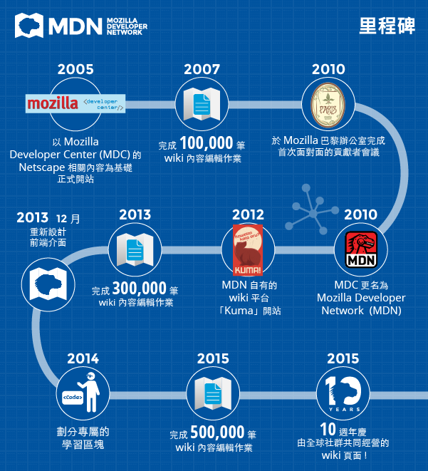

對少數具備多種語言版本的 Web 說明文件網站來說，Mozilla 開發者社群網站 (Mozilla Developer Network，MDN) 的豐富程度絕對是箇中翹楚。Mozilla 很高興能在今天歡慶 MDN 的十歲生日。MDN 於 2005 年 2 月開站，當時仍由小型團隊以 Open Web 為中心，挖掘DevEdge (即當時 Netscape 開發資訊) 的有用素材，針對 Web 開發者另外獨立出開放、免費，並交由社群打造的線上資源。不過幾個月後，即於 2005 年 7 月 23 日開設 MDN 的原始 wiki 網站，自此為所有使用者穩定提供親民且優質的內容。

10 年後的今天，不僅文章總數已達 34,500 篇且持續成長中，而且 MDN全球性的志願者社群較之前更為壯大。目前每個月均超過 4 百萬名使用者，且各月均有 1000 多名志工編輯負責撰寫並翻譯說明文件、線上教學、範例程式碼等學習資源，其中包含 CSS、HTML、JavaScript，以及可讓 Open Web 更豐富多元的任何素材。

不論是初學者、業餘愛好人士，甚至全職的專業人員，MDN 一直為廣大的 Web 開發者提供有用的程式碼實作，期望能激盪更多想法、鼓勵多人協作與創新，最終要能加速茁壯 Open Web。此外，隨著數位產業興起，年輕一代的程式開發能力更受到重視，而類似 MDN 的整合性資源也越來越重要。因此針對剛接觸 Web 的初學者，MDN 已於 2014 年起將相關學習網頁擴充成為「Learn the Web」專區，其中並內含 Web 常見術語的字彙庫，將由 MDN 技術寫手與志工持續新增更多元的內容。
若沒有活躍的 MDN 貢獻者積極參與，我們絕對不會有上述的成就。這些心血同樣獲得全球開發者的肯定，甚至許多人承認沒有 MDN 就不會有他們手上的成果，至少無法達到現在的水準。
更多相關資訊：
Web：https://developer.mozilla.org/
Twitter：https://twitter.com/MozDevNet